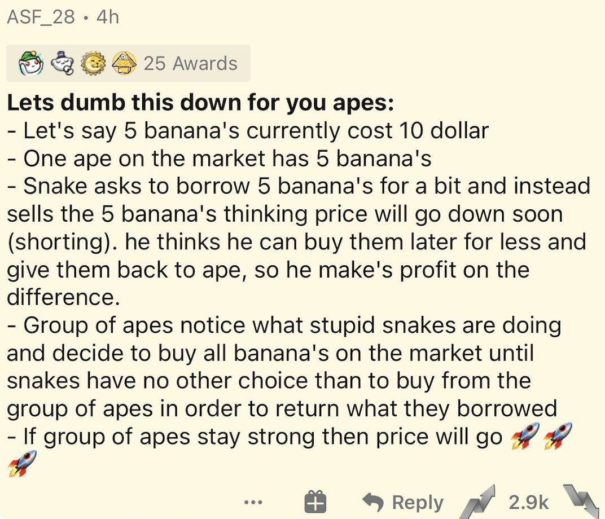
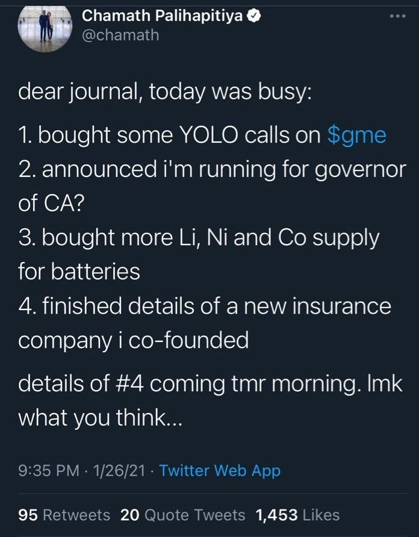
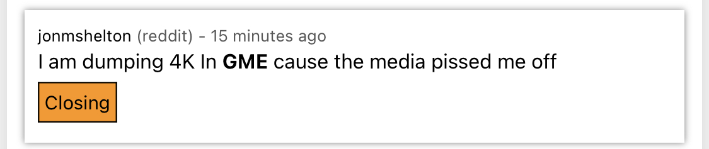
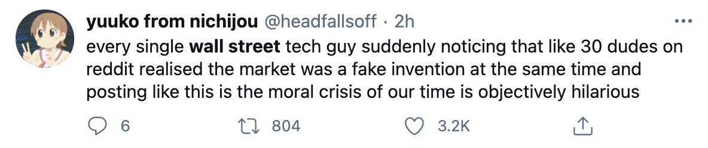

1/27/2020
Sure, that's a clickbaity title. We're not quite undergoing a financial "revolution" right now. But the Gamestop ($GME) stock surge facilitated by the Wallstreetbets (WSB) subreddit has a twinge of revolution.
If you didn't follow it, the tl;dr is: the bois at WSB liked Gamestop, an investment management firm lad has been over-shorting (betting against) $GME,1 and the bois caught wind and decided to own him. Here it is in the words of one of the WSB members:
As a result, that firm lost around $2.3 Billion in shorts, while $GME is up over 850% in the last month. It's even reported that the firm might be filing for bankruptcy in the new few days. Meanwhile, the WSB folks are still on the Gamestop hype train, hoping to "send it to the moon🚀." Some even set their price target at $1,000 by Thursday with plans to sell on Friday.
Jim Cramer of "Mad Money" gave WSB a nod of approval yesterday. He even went so far as to say that the hedge fund folks who shorted $GME were arrogant and had it coming (and I'm inclined to agree).
Billionaire Chamath Palihapitiya also heaped some coal on the fire fueling the metaphorical hype train's steam engine in the form of a few hundred thousand dollars' woth of shares.
On the other hand, famed "The Big Short" investor Michael Burry said of this rally, "what is going on now – there should be legal and regulatory repercussions. This is unnatural, insane, and dangerous."2
It's obviously reckless, but that's the modus operandi for r/wallstreetbets. While there are many good-faith bets made by the subreddit's users, may of their investments are purely for the meme. Most, I'd wager (heh), would admit that Gamestop's future is not the brightest and that $200+ per share is absurd. But like I said, they're doing it for the meme--and to stick it to the man.
So why did I use the word "revolution" in the title? For one, that was a common theme in many of the WSB subreddit comments today. A number of the Redditors saw this as their chance to get rich while sticking it to the boomer establishment. Others view it as a way to expose the shady back-room deals that high-rolling investors make to drive prices up or down while outperforming them in a publicly-accessible way. For others, this is all just an expensive meme. After reading through the subreddit today, I got an initially intangible and unique feeling. Much of the commentary was a call to action to take down the rich, established haters on Wallstreet. I realized that, in a way, it felt like vigilante justice was being served. Many of the investors and wealth-management groups that have been bailed out over and over again were suddenly running around like headless chickens. This is a unique moment in my lifetime where it feels like the will of the many is actually influencing the markets and the distribution of wealth in a tangible way. While I in no way expect WSB to come even close to "saving the world" or even facilitating major financial reform in the near future, I hope this momentum continues. If it does, perhaps we'll actually expose the ever-widening gap between the stock market and the true economy. And hopefully investing will become more and more accessible for the average citizen. These are lofty goals, but given how hopeless the last year has felt, I'm allowing myself to dream just a little--at least until I finish writing this article and my cup of hot chocolate.
Obviously, this WSB $GME hype train can and likely will fizzle out in the coming days. But I do suspect WSB will use its collective power in a similar way again. It's hard not to root for them since they're taking on the financial "establishment." And frankly I had a bit of a chuckle when I heard how much was lost in shorts. On the other hand, there are several aspects of the community's culture I don't agree with; many of them are also looking to get rich themselves. But WSB is certainly a force to be reckoned with. Hedge fund managers are already panicking and hiring teams to parse and analyze the subreddit,3 while some of the Redditors are considering restricting access to WSB.
We'll see the impact of WSB or similar groups in the coming months. In the mean time, I'm holding my $GME--at least until Friday. (Obligatory note: NONE of this is financial advice). I might lose that money, but frankly I don't care.
1Somehow this hedge fund lad managed to short 148% of the company, and furthermore was indirectly responsible for, iirc, about 15,000 employees being laid off from Gamestop in the last few months.
2The original tweet was deleted, and frankly these comments were a little rich since he's estimated to have made a 1500% return on $GME. Plus, he was one of the original folks behind the stock's rally in the last few months.
3The irony is that similar tools--specific to WSB--already exist for free. Plus, algorithms likely can't predict the memeing that will occur on the subreddit.